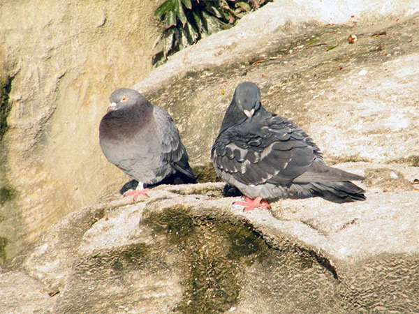
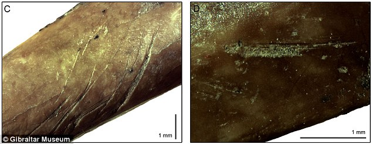

Home
The pigeons we know today are the descendants of rock doves or scientifically known as Columba livia that inhabit sea caves, cliffs and mountainous areas. due to humans long history with pigeons, it's hard to pinpoint exactly where they derived from. The birds are native to the Mediterranean and surrounding areas like western and southern Europe, North Africa, and parts of South Asia. wild rock doves can still be found in their native habitats, where they sometimes breed with their distant cousins, the modern pigeon.

Rock doves inhabiting cliffsThe oldest known record of the human-pigeon relationship was found in a cave in Gibraltar. Rock dove bones were found in the cave with tool impressions and markings from a fire. the bones were dated back to the Late Pleistocene era, approximately 67,000 B.C.E, before modern humans populated the earth. This is evidence that ancient humans would catch and roast the doves for food. Rock doves are naturallyfertile and reproduce fairly quickly, so hunting them wouldn't deplete the natural food stock, this is likely where humanity's connection with pigeons and fertility comes from. rock doves feed off seeds on the ground and live in nests off cliffs, so it could be easy for a stealthy archaic human to catch and roast the bird.

tool impressions in rock dove bonesfor most of history humans and pigeons have coexisted, but convenient food targets is not the same as domestication, to find evidence of domestication, archaeologistsmust find that humans deliberately raised and bred the bird. the earliest example of this is in Hala Sultan Tekke, in Cyprus. many rock dove bones were found, more dove bones than most other birds, dated back to around 1400 B.C.E. the island of Cyprus is the mythical birthplace of Aphrodite, the goddess of love and fertility. Theres evidence that the people of the bronze age on the island bred and roasted the birds for feasts, likley to celebrate their fertility. the bones of the birds were slightly different to those of wild rock doves, it shows their diet was more cultivated than a bird in the wild would find. The people of Hala Sultan Tekke, in Cyprus were the earliest known proof of domesticating what will become the domestic pigeon
Carter, Anderson L., David S. Reese, Ronald van Bommel, Marcel T. J. van der Meer, and Canan Çakırlar. “Uncovering the Lives of Rock Doves (Columba livia) in Late Bronze Age Hala Sultan Tekke, Cyprus.” Antiquity 100, no. 412 (August 2026): 979–995. https://doi.org/10.15184/aqy.2026.10351.
Ewing, Linda. “Where Did Pigeons Come From? A Global History of Pigeons.” Bird Collective, October 6, 2026. https://www.birdcollective.com/blogs/news/history-of-pigeons-origins.
Blasco, Ruth, et al. “The Earliest Pigeon Fanciers.” Scientific Reports 4 (2014): article 5971. https://doi.org/10.1038/srep05971